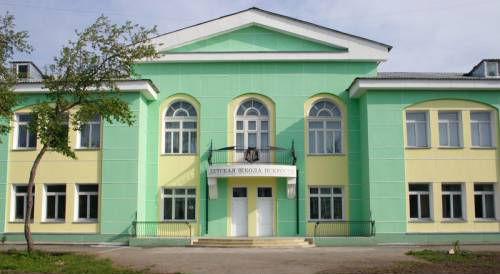

Детская школа искусств
(ДШИ) муниципальное бюджетное учреждение дополнительного образования детей. Реализует образовательные программы в области художественного и гуманитарно-эстетического образования и воспитания детей от 4 до 18 лет. Основана в 1973 как детская художественная школа, в 1998 получила название «Детская школа искусств». Первый директор А.В. Петухов, с 1984 — отличник культуры СССР Н.А. Иоффе. Школу окончили 1,3 тыс. учащихся, более 350 из них продолжили обучение в специальных художественных учебных заведениях.
В структуре школы 6 отделений: с 1973 - художественное и вечернее (подготовка выпускников к поступлению в специальные учебные заведения искусства, студийные занятия для любителей по станковому искусству, керамике, дизайну); с 1992 - гуманитарное (зав. Т.В. Ветрова, комплексное преподавание изобразительного искусства, словесности, истории культуры, учебный театр), с 1996 — декоративно-прикладного искусства (зав. Е.А. Макаркина, специализация по видам декоративно-прикладного искусства, театр моды); с 1998 — эстетическое (зав. Л.В. Краева, развитие способностей, подготовка к поступлению на другие отделения школы); «Школа малышей» (студийные занятия с детьми от 4 до 7 лет).
Учащиеся ДШИ - лауреаты и дипломанты многочисленных международных и всероссийских выставок и конкурсов. Международные выставки: «Портрет моей страны» (Санкт-Петербург, 2006), «Космос и я» (Новосибирск, 2006, 2007, 2010), печатной графики (Польша, г. Торунь, 2006, 2010), «Всегда зеленое, всегда голубое» (Польша, 2007), Биеннале свистулек (Италия, 2007), «Золотое перо Руси» (Москва, 2007), «Древо жизни» (Литва, 2007), «Арт-город» (Санкт-Петербург, 2009), «Добро и зло в сказках и мультфильмах» (Новодвинск, 2010), фестиваль детского изобразительного искусства (Москва, 2007, 2008, 2010). Всероссийские выставки-конкурсы: «Мир вокруг нас» (Сызрань, 2007, 2008), «И помнит мир спасенный» (Москва, 2010), «Чехов и герои его произведений» (Таганрог, 2010), «Все краски мира» (Москва, 2010), «Иллюстрации к произведениям Петрония Гай Амматуни» (Ростов-на-Дону, 2011), «Красная книга глазами детей» (Нягань, 2011) и многие др.
Н.А. Иоффе